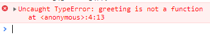
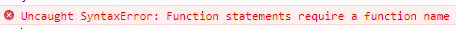
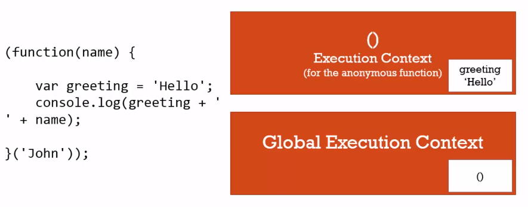

立即呼叫函式表達式 IIFE
這堂課將介紹在 JavaScript 中非常普遍出現在各個 Framework 和 Library 中的一個函式用法，立即呼叫函式表達式 (Immediately Invoked Function Expressionss) 簡稱 IIFE。
Function State & Function Expressions
在之前的課程中，我們已經介紹了函式陳述句 (Function Statement) 和函式表達式 (Function Expressions)，在這兩種函式被建立時，會儲存在記憶體中，但 JavaScript 執行時並不會執行這些函式，而是等到這些函式被呼叫 (invoked) 後才會執行
1 | // Function Statement |
立即呼叫函式 Immediately Invoked Function Expressions (IIFE)
當我們建立函式的時候就馬上使用它，把建立和呼叫的動作組合在一起，就是一個立即呼叫函式。首先建立一個 Function Expressions 並回傳一個值，接著將它直接印出來，理所當然地會得到這個函式本身
1 | var greeting = function(name) { |
當我們執行它時，就會得到函式回傳的值
1 | var greeting = function(name) { |
那如果把呼叫的動作放到函式建立的時候，就會形成一個 IIFE
1 | var greeting = function(name) { |
會發現得到和原先一樣的結果，但如果我們再次呼叫 greeting() ，就會得到以下 Error Log，因為我們呼叫的是 return 的 string
1 | var greeting = function(name) { |

直接建立 IIFE
在 JavaScript 中，如果我們直接在程式碼寫上一個值，即使不透過變數宣告，也不會出錯
1 | 3; // number |
那如果我們直接寫了一個 Anonymous Function 呢 ?
1 | function(name) { |
會發現出現以下 Error Log，因為當 JavaScript engine 看到 function 開頭時，它就會期待你是一個需要名稱的 Function Statename

為了不要讓 JavaScript 認為這是一個 Function Statement，所以我們不能以 function 作為程式的開頭 ; 為了達到這個目的可以透過括號 () 來將整個函時包起來，而因為括號只會包含 Expressions，例如 (3+2) * 4;，所以程式就不會報錯了
1 | (3+2) * 4; |
寫到這裡就如同前面其它型別的例子，雖然這是一個合法的寫法，但其實我們也只是建立了一個函式而已什麼也沒有做，這時候我們可以函式建立時就呼叫它，看到了嗎?這就是一個 IIFE，
1 | var firstname = 'John'; |
這樣的寫法常見於各大 Framework 和 Library 中，我們也許會看到呼叫的括號有的放在裡面，有的放在外面，這些其實都是合法的寫法，只要選擇一種風格並保持就可以了。
1 | // inside |
安全程式碼
當 JavaScript Engine 開始執行時，會產生一個全域的執行階段 (Global Execution Context);接著當程式執行到我們所建立的 IIFE 時，這段匿名函式 (Anonymous Function) 會儲存在全域執行階段 (Global Exection Context) 中，而因為這是一個在最後有加上括號 () 的 IIFE，所以這個函式會立即被執行並產生一個新的 Execution Context，而其中所建立的變數 gretting 就會在這個 Execution Context 裡面，不會影響到 Global Execution Context;因此，透過 IIFE 我們就可以達到變數彼此不會互相影響目的了。

透過影響外層變數重複使用
那如果我們希望 IIFE 中的變數可以重複使用的話該怎麼做呢 ?
雖然我們使用 IIFE 的目的就是希望變數彼此不會互相影響，但有時候又希望可以在全域環境中使用到這些變數，這時候就可以透過將全域物件 window 帶入到 IIFE 中，並將目標變數綁訂到 window 上，如此一來既可以在其他 Execution Context 使用到它了。
1 | // IIFE |
但在開發時，我們需要確定的定義綁定到全域的變數，不能因為一個問題或一時方便就這麼做，否則就失去 IIFE 將變數環境各自獨立的目的了。